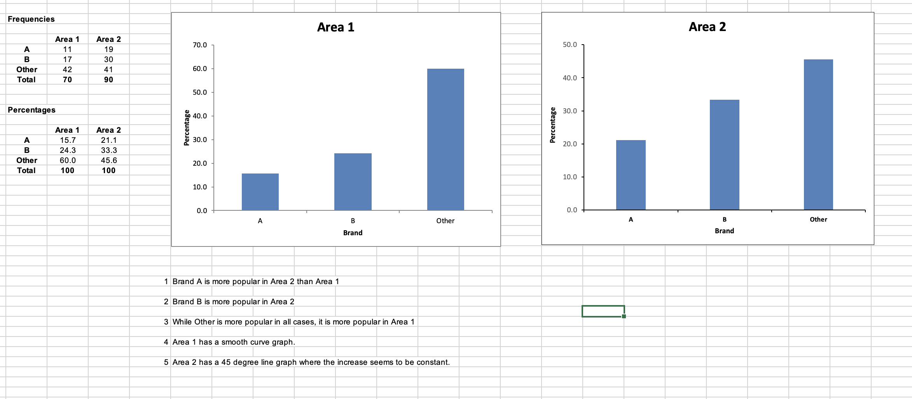
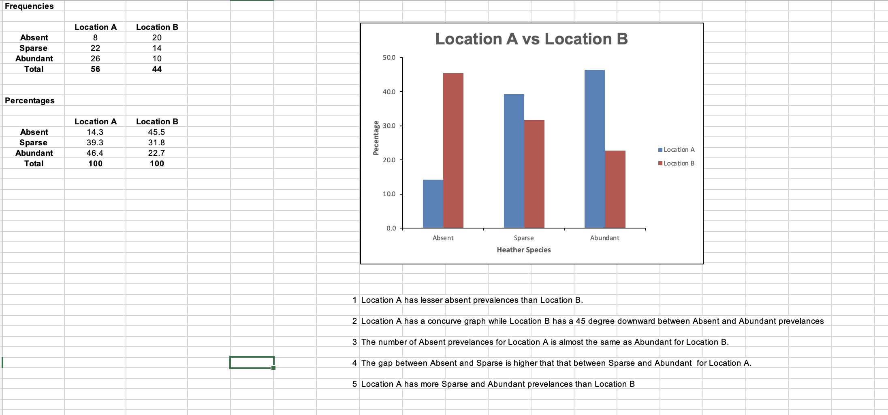
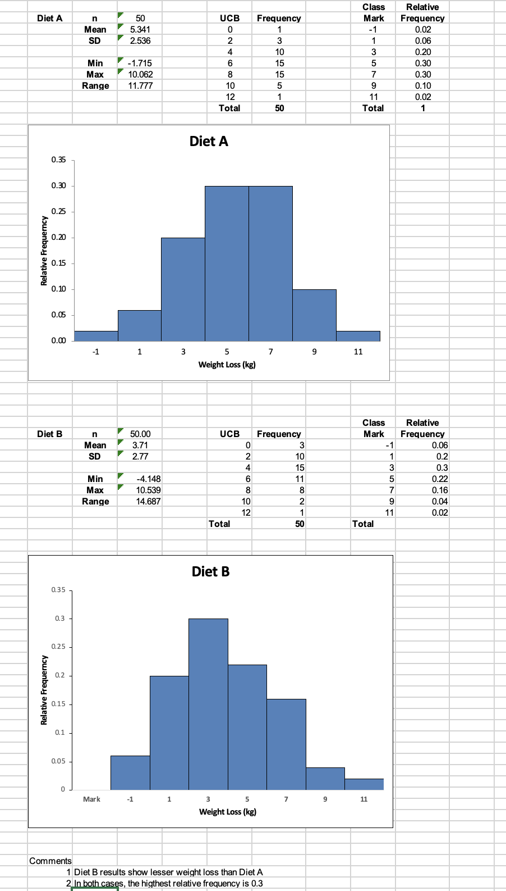

Unit 1: Scientific Investigation and Ethics
Deductive and Inductive reasoning
Inductive gathers data to develop a hypothesis. The data creates a trend that then results in further investigation. This approach is often used in qualitative research where researchers aim to generate new theories or explore new ideas.
Deductive starts with the theory and then try to prove it through observations and data collection. This approach is often used in quantitative research, where researchers aim to confirm or disprove existing theories.
Ethics
This covers what is seen as right based on industry and moral standards. There may be regional impact on interpretation. However, the world in general agrees on values and concepts of honesty, integrity, transparency and accountability irrespective of cultural differences.
Collaborative Learning Discussion 1Forum
My Inititial Post “As exposure to the internet grows, so do the changes in the cultural and societal influence of technology.
According to the ACM Code of Ethics and Professional Conduct,
“When organizations and groups develop systems that become an important part of the infrastructure of society, their leaders have an added responsibility to be good stewards of these systems.”
As the world becomes a global village due to technological exposure, developing nations are at risk of being westernised by the applications they adopt as applications developed mainly for the Western world. The application users, especially the vulnerable age groups, may not be able to identify any negative impact on their values.
Rau, Gao, and Liang state that computer technology users from different cultural backgrounds adapt and behave differently depending on their background. They also highlight that technology developers have not yet been able to come up with solutions that consider all cultural backgrounds.
Keller, Perez and Vatrapu argue that the presentation of application artefacts such as icons screen layout and translations are some of the “beyond the surface” cultural-related items that developers need to consider. Different cultures have different ways of interpreting images and even things like names and surnames. Some translations may mean different things in other religions, cultures, and languages, some even being offensive.
References
ACM. (n.d.). Code of Ethics. Retrieved from https://www.acm.org/code-of-ethics
Hartawiguna, A. A. L. (2021). Key issues in the digital environment – Cultural Factors https://sis.binus.ac.id/2021/12/17/key-issues-in-the-digital-environment-cultural-factors/
Keller, B., Pérez-Quiñones, M. A., & Vatrapu, R. Cultural Issues and Opportunities in Computing Education
Rau, P. P., Gao, Q., & Liang, S. F. M. (2008). Good computing systems for everyone – how on earth? Cultural aspects. Behaviour & Information Technology, 27(4), 287-292. DOI: 10.1080/01449290701761250.”
In reviewing my post, Woodmen
My Peer Review
“Tomas, thank you for your post that highlights some of the most important elements of dealing with abusive behaviour in a workplace based on gender orientation. The International Labour Organisation’s article, "System needs update": Upgrading protection against cyberbullying and ICT-enabled violence and harassment in the world of work, (De Stefano et al., 2020) highlights the weaknesses in previous definitions that seem to focus on whether the events are of a recurring nature. They note that even an event that occurs once may have a long-lasting impact on the victim. They therefore propose the redefinition of bullying to exclude frequency. Giaccone & Di Nunzio, Year (2015) while highlighting the impact on victims of bullying in the workplace state: “Their working conditions may become so unbearable that they choose to ‘voluntarily’ quit the job.” They highlight that bullying may result in mental health-related illnesses such as anxiety and depression. If the victims do not quit, they are most likely to be frequently absent from work thereby impacting their performance. Rajpara et al. (2022) discuss the use of using machine-learning languages. This helps to detect unreported cases in instances where the victim suffers silently. The use of technology can be extended to social media where intext reading of posted messages can be able to identify the bullies. References: De Stefano, V., Stylogiannis,C., Wouters, M., Durri, I. (2020). System needs update": Upgrading protection against cyberbullying and ICT-enabled violence and harassment in the world of work. Giaccone, M., Di Nunzio, D. (2015). Violence and harassment in European workplaces: Extent, impacts and policies. Rajpara, K., Phadtare, C., Shah, K., Mehendale, N. (2022). A Review on Cyberbullying Detection using Machine Learning.”
References
Anderson, H & Hepburn, B. (2020) 'Scientific Method' in: Zalta, E. (Eds) The Stanford Encyclopedia of Philosophy (Winter 2020 edition). Metaphysics Research Lab, Stanford University.
Bailey, M. et al. (2013) Applying Ethical Principles to Information and Communication Technology Research: A Companion to the Menlo Report.
Johnson, E., & Smith, L. (2020). Ethics in Scientific Research: Balancing Rigor and Responsibility. Springer.
National Academy of Sciences. (2017). On Being a Scientist: A Guide to Responsible Conduct in Research (3rd ed.).
Smith, J. (2018). Scientific Investigation: Principles and Methods. Academic Press.
Stahl, B. C., Timmermans, J., & Flick, C. (2017). Ethics of Emerging Information and Communication Technologies: On the implementation of responsible research and innovation. Science and Public Policy, 44(3), 369–381. https://doi.org/10.1093/scipol/scw069
Woodman, T. (31 August 2023) Peer Review https://www.my-course.co.uk/mod/forum/discuss.php?d=179154
Unit 2: Research Questions, the Literature Review and the Research Proposal
Research question – This identifies the purpose of the research. The research question should be narrowed to a specific area to avoid too many questions and then leaving questions on what the research was all about.
My selected question “Use of Information Systems (IS) to transform Small Businesses”.
Research Proposal:
A research proposal outlines the plan for conducting a research study. It includes a detailed description of the research objectives, research questions, methodology, theoretical framework, and potential significance of the study's findings. A research proposal provides information about the research design, data collection methods, analysis techniques, and ethical considerations. It helps researchers gain approval from funding agencies, institutions, or ethics review boards before beginning the actual research.
Introduction: Brief overview of the research problem, aims, and objectives.
Literature Review: Summary of existing research on the topic.
Research Question: Clear definition or detailing of the research question and its relevance.
Methodology: Explanation of research design, data collection methods (and data analysis techniques.
Ethical Considerations: Explanation of how ethical concerns related to participant consent and data privacy will be addressed.
Significance: Explanation of the potential contributions of the study to existing knowledge and its practical implications.
Artefacts to be used.
Timelines
Unit 3: Research Methods
Qualitative - response based
Quantitative – analysing numbers
In my research, I will be using the mixed approach where I deduce numbers from the literature review while analysing responses from the case studies. I will be able to come up with bar graphs from the quantitative analysis.
Unit 4: Case Studies, Focus Groups and Observations
Case Studies
A case study is a research method that involves the investigation and analysis of a specific individual, group, or organisation. It aims to provide a comprehensive understanding of the context and complexities surrounding the chosen focus. Case studies often use multiple sources of data, such as interviews, documents, and observations, to gather detailed information.
Key Points:
In-depth investigation of a specific case.
Detailed data from multiple sources.
Used to understand complex contexts and generate hypotheses.
Provides a holistic view of the case.
Focus Groups
A focus group is a qualitative research method involving a small group of participants who engage in structured discussions facilitated by a moderator. The participants share their perspectives, opinions, and experiences related to a specific topic. Focus groups are useful for exploring diverse viewpoints, understanding group dynamics, and identifying common themes or patterns. Researchers use this method to gather insights into social attitudes, preferences, and group perceptions.
Key Points:
Small group discussions led by a moderator.
Participants share opinions and experiences.
Used to explore diverse viewpoints and group dynamics.
Provides qualitative data on attitudes and perceptions.
Observations
Observations involve systematically watching and recording behaviour, interactions, or events in their natural settings. Researchers use this method to gather first-hand information about how people behave and interact in specific situations. Observations can be a participant or non-participant. They provide valuable insights into behaviour, contexts, and patterns that may not be captured through self-report methods.
Key Points:
Systematic recording of behaviour and interactions.
Captures natural behaviour in real settings.
Participant or non-participant roles.
Provides objective data on behaviour and context.
References
Emerson, R. M., Fretz, R. I., Shaw, L. L. (2011). Writing ethnographic fieldnotes (2nd ed.). University of Chicago Press.
Krueger, R. A., Casey, M. A. (2014). Focus groups: A practical guide for applied research (5th ed.). Sage Publications.
Yin, R. K. (2014). Case study research: Design and methods (5th ed.). Sage Publications.
Unit 5: Interviews and Survey Methods
Interviews involve asking questions to a small group of people.
Surveys target a much larger group with questioners such as online forms
In 2018, Cambridge Analytica was in the news in the United Kingdom and the USA (Confessore, 2018)
Boerboom (2020), suggests that some of the methods such as questioners collecting personal data were unethical.
References
Boerboom, C. (2020) Cambridge Analytica: The Scandal on Data Privacy
Dillman, D. A., Smyth, J. D., & Christian, L. M. (2014). Internet, Phone, Mail, and Mixed-Mode Surveys: The Tailored Design Method. John Wiley & Sons.
Fowler Jr., F. J. (2013). Survey research methods. SAGE Publications.
Unit 6: Questionnaire Design
Questionnaire Design:
Questionnaire design involves creating structured sets of questions to gather information from respondents. Well-structured questionnaires ensure that the data collected is reliable, valid, and relevant to the research objectives.
Properties
Clear Objectives: Clearly define the research objectives and the information to be collected.
Target Audience: Target audience's characteristics, preferences, and level of understanding to tailor the questions appropriately.
Question Types:
Closed-Ended Questions: Provide a predefined response with an example such as a multiple-choice
Open-Ended Questions: Allow respondents to provide free-text responses for detailed insights.
Question Wording:
Clear and concise language.
Avoid leading or biased questions that might influence responses.
Keep questions neutral to prevent respondents from feeling pressured.
Logical Flow:
logical sequence, progressing from general to specific questions.
Group related questions together to maintain coherence.
Avoid technical Jargon if respondents are not technical: Use language that is familiar to your target audience and avoid technical jargon.
Response Scales:
Use consistent response scales throughout the questionnaire.
Provide an even number of response options to avoid a neutral middle choice.
Implement skip logic to direct respondents to relevant questions based on their previous responses.
Test the questionnaire with a small sample to identify any issues with clarity, relevance, or flow.
Keep the questionnaire short and simple to prevent respondent fatigue..
Include demographic questions at the end to avoid biasing respondents' answers to earlier questions.
References:
Dillman, D. A., Smyth, J. D., & Christian, L. M. (2014). Internet, Phone, Mail, and Mixed-Mode Surveys: The Tailored Design Method. John Wiley & Sons.
Fowler Jr., F. J. (2013). Survey research methods. SAGE Publications.
Oppenheim, A. N. (1992). Questionnaire Design, Interviewing and Attitude Measurement. Pinter Publishers.
Unit 7 Validity and Generalisability in Research
Discussion Topic - Case Study: Accuracy of information
My Contribution
“According to Schnackenberg and Tomlinson (2014), voluntarily disclosing information has lesser damage than another party discovering and disclosing the information and worse, potential cover-up. Abi has an ethical obligation to reveal the findings of his investigation to his stakeholders which may lead to a verification exercise of his findings. While the information may impact his organisation, they can reduce the damage by being open about the situation.
The findings of the research that will be published may be subject to peer review. This may identify any information that may have been reported incorrectly or deliberately omitted. Ware (2008) states,
“In our survey, however, the large majority of authors (around 90%) were clear that peer-reviewed had improved their own last published paper”.
There is a possibility that the review of the findings by a peer may identify inconsistencies in the shared findings.
Dacin et al.(2022) highlight that organisations may have to decide whether not disclosing specific findings is legal or not. Additionally, decisions must be made on whether, if legal, it is ethical. Some decisions may be legally correct but morally and ethically incorrect. If there are no legal requirements requiring the findings to be disclosed, in a case where this impacts human health, it is unethical not to make public the confirmed findings.
References
Dacin, M. T., Harrison, J. S., Hess, D., Killian, S., Roloff, J. (2022). Business Versus Ethics? Thoughts on the Future of Business Ethics. Journal of Business Ethics, 180(3), 863–877. DOI: 10.1007/s10551-022-05241-8.
Schnackenberg, A. K., Tomlinson, E. C. (2014). Organizational Transparency: A New Perspective on Managing Trust in Organization-Stakeholder Relationships. Journal of Management, 42(7), DOI: 10.1177/0149206314525202
https://www.researchgate.net/publication/275441822_Organizational_Transparency_A_New_Perspective_on_Managing_Trust_in_Organization-Stakeholder_Relationships
Ware, M. (2008). Peer review: Benefits, perceptions, and alternatives https://ils.unc.edu/courses/2014_fall/inls690_109/Readings/Ware2008-PRCPeerReview.pdf
[Accessed 2023 August 18]”
My Peer Responses
“Thank you, Tomas, for your post that questions the integrity of posting part of results that seem to only portray a positive picture. The UK has laws that protect people who choose to go public in the interests of public welfare and this is regulated by the Public Interest Disclosure Act 1998 (PIDA). This will be able to protect Abi if he chooses to go public about his findings. According to Nwoha (2021), the act protects current and former employees of an organisation. This allows them to disclose information of public interest without fear of legal or any other form of action from the organisations they work or used to work for. The article also highlights that the act together with the Regulatory Reform Act 2013 tries to protect the whistle-blower.
Hana (2016) points out that while trying to protect the whistle-blower, the act allows the employee or former employee to use a lower court as a means of getting a remedy. The article suggests that a more powerful court should have control over the act. This will then give more confidence to the potential whistle-blowers that they will be protected by a more powerful court. This can also result in stiffer penalties for the organisations in breach of the acts.
References
Hana, P. (2016). PROTECTING WHISTLEBLOWERS IN THE UK: A New Blueprint
Nwoha, O. (2021). Whistleblower Protection in the UK: A Case for Reform”
Thank you, Trevor, for your post. I take from your post that Abi’s responsibility goes as far as giving his stakeholders information based on his findings. Whatever they do with the information is their responsibility. However, should they choose to use part of his findings, it then leaves Abi in a difficult place. Talwar (2019) details:
“From Facebook to email updates, computer users are unaware of the fine balance between ethics and profit struck by providers. Software developers, businesses and individuals must think about the rights and wrongs of using information technology every day.”
“It becomes difficult for businesses to decide on what to and what not to reveal to the public as this may impact their profits. It may also not only be about what to release but how to release it as this may also affect how the information is received. Should Abi choose to reveal the findings of his research, he may not have enough capacity to face the legal challenges that may follow his actions. He must balance between a potential legal battle that may follow versus whether the organisation will one day do the right thing. Stahl et al. (2017) highlight that it may be difficult to identify what is ethical or not.
References
Stahl, B. C., Timmermans, J., & Flick, C. (2017). Ethics of Emerging Information and Communication Technologies: On the implementation of responsible research and innovation. Science and Public Policy, 44(3), 369–381. https://doi.org/10.1093/scipol/scw069
Talwar, R.(2019). Information Technology and Ethical Issues. https://www.ijcaonline.org/archives/volume178/number8/30552-2019918784”
Unit 8
Inferential Statistics:
involve making inferences or drawing conclusions about a population based on a sample of data.
Key Concepts
Sampling: Inferential statistics begin with the selection of a representative sample from the population of interest. Random sampling methods are often employed to ensure that the sample accurately reflects the population's characteristics.
Hypothesis Testing: Researchers formulate hypotheses about relationships or differences in the population and then use statistical tests to determine if the observed data supports or rejects these hypotheses.
Confidence Intervals: A confidence interval provides a range within which a population parameter is likely to fall. For example, a 95% confidence interval for a population mean indicates that we are 95% confident that the true population mean lies within that interval.
Significance Testing: Significance tests assess whether observed differences or relationships in the data are statistically significant or likely due to chance. Common significance levels include 0.05 (5%) and 0.01 (1%).
P-values: P-values indicate the probability of obtaining the observed results if the null hypothesis (no effect or relationship) is true. A small p-value suggests that the observed results are unlikely under the null hypothesis, leading to its rejection.
Effect Sizes: Effect sizes quantify the magnitude of differences or relationships found in the data. They provide a standardized measure of practical significance.
Regression Analysis: Regression models analyse the relationships between variables, allowing researchers to predict one variable based on the values of other variables.
References:
Agresti, A., & Franklin, C. A. (2018). Statistics: The Art and Science of Learning from Data. Pearson.
Moore, D. S., & McCabe, G. P. (2017). Introduction to the Practice of Statistics. W. H. Freeman.
Unit 9
Diagrams


